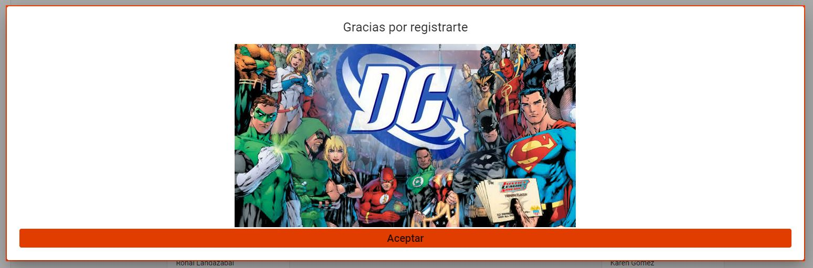

Dialogo¶
Dialogo
- Descripción
Este componente de dialogo es usado para notificarle al usuario cuando se ha realizado un proceso satisfactorio o con algún error.
- Importaciones
Para este componente se requieren las importaciones de dialogo de Angular Material.
import { MatDialogRef, MAT_DIALOG_DATA } from '@angular/material/dialog';
- Desarrollo
Este componentes esta diseñado para mostrar el mensaje recibido con una imagen significativa del equipo, tal y como se puede ver en el siguiente codigo HTML.
<div class="mensaje"> <h1>{{data.mensaje}}</h1> <img class="foto" src="https://blogdesuperheroes.es/wp-content/plugins/BdSGallery/BdSGaleria/20546.jpg" alt=""> </div> <div > <button mat-button class="button" (click)="close()" >Aceptar</button> </div>